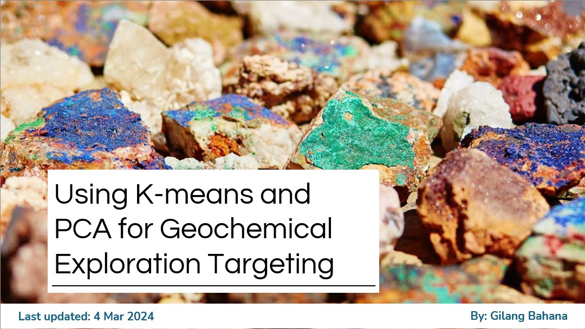

Stream sediment geochemical data from Southeast Ireland was used to identify LCT Pegmatite anomalies
using unsupervised machine learning. K-means clustering reflects sub-surface lithological variation,
while Principal Component Analysis (PCA) isolates element associations diagnostic of LCT Pegmatite mineralisation.
Data sourced from Geological Survey Ireland.


Quantitative analysis of the relationship between drill hole spacing and resource classification confidence
in nickel laterite deposits using extension variance methodology. By utilising kriging and extension variance to
model spatial relationships, the study calculates the probability that tonnage and grade fall within a strict
target of a maximum 15% error at a 90% confidence interval.
MSc Thesis: Local Uniform Conditioning in Porphyry Copper Resource Estimation
Evaluated the Local Uniform Conditioning (LUC) technique for recoverable resource estimation
in porphyry copper deposits, comparing performance against conventional change-of-support methods.
Submitted in partial fulfilment of MSc Mining Geology with Distinction,
Camborne School of Mines, University of Exeter, 2024.
Machine Learning EDA for Geological Domaining — Nickel Laterite Case Study
Exploratory data analysis workflow using supervised and unsupervised machine learning
to support geological domain definition in a nickel laterite deposit.
Demonstrates how ML can reduce subjectivity in the domaining process
prior to resource estimation.
Multi-element Geochemistry in IoGAS — A Machine Learning Study
Applied multivariate statistical and machine learning methods to multi-element geochemical datasets
in IoGAS, exploring element associations and anomaly detection relevant to mineral exploration targeting.
Presented as a technical talk, 2024.
Python-Based Resource Estimation Pipeline
End-to-end JORC-compliant mineral resource estimation pipeline built in Python, developed for
the Solomon Nickel Laterite Project (Target 8–12, LIM/SAP/BRK domains).
Covers data validation, compositing, variography, kriging, and post-estimation QC.
Synthetic dataset version in preparation for public release on GitHub.
Non-linear Geostatistics: Uniform Conditioning & Conditional Simulation
Technical talk covering the application of non-linear geostatistical methods —
Uniform Conditioning and Conditional Simulation — to quantify and communicate resource uncertainty
in complex deposits. Presented to industry audience, 2024.
Builds on practical experience applying these methods at PT Timah and Mineral Alam Abadi Group.